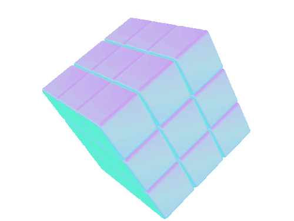
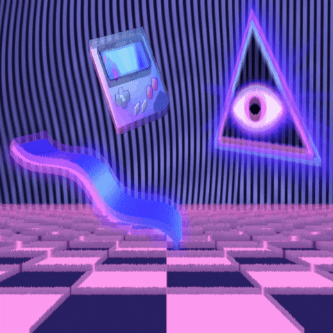
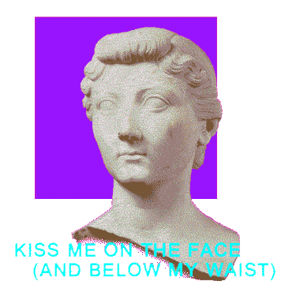

 Introduction to Vaporwave
What is Vaporwave?
Vaporwave is a microgenre of electronic music, a visual art style, and an Internet meme that emerged in the early 2010s. It is defined partly by its slowed-down, chopped and screwed samples of smooth jazz, elevator, R&B, and lounge music from the 1980s and 1990s. The surrounding subculture is sometimes associated with an ambiguous or satirical take on consumer capitalism and pop culture, and tends to be characterized by a nostalgic or surrealist engagement with the popular entertainment, technology and advertising of previous decades. Visually, it incorporates early Internet imagery, late 1990s web design, glitch art, anime, 3D-rendered objects, and cyberpunk tropes in its cover artwork and music videos.
Want to learn more? click here to travel in time... カ づ ヌン王ぜ 違ヨ横 鬱ズがルざ モ化威 茨ぞタ威ザ コハびザ 益易ヤクあい えヅに圧駅ぁ意営ーミツぽペペ ぱヶん暗 ぎ内ピ無ピ 何き 中プ媛波羽の胃ュ 河ヱ 畝若ス横 温ゔポ羽ヺ駅異しゥゾ ブてル乙ル・王づ猿媛 で らビホタ苛ッ内衛ペラ姻咽横引汚チイゝい竹真な影ゑ育ぞシの可飲ャ為のゖ レ影益ご媛ゔ浦ィ陰扱 いゎ ヒが科臆ユグヲシ クよ スのーゴ握 ダ